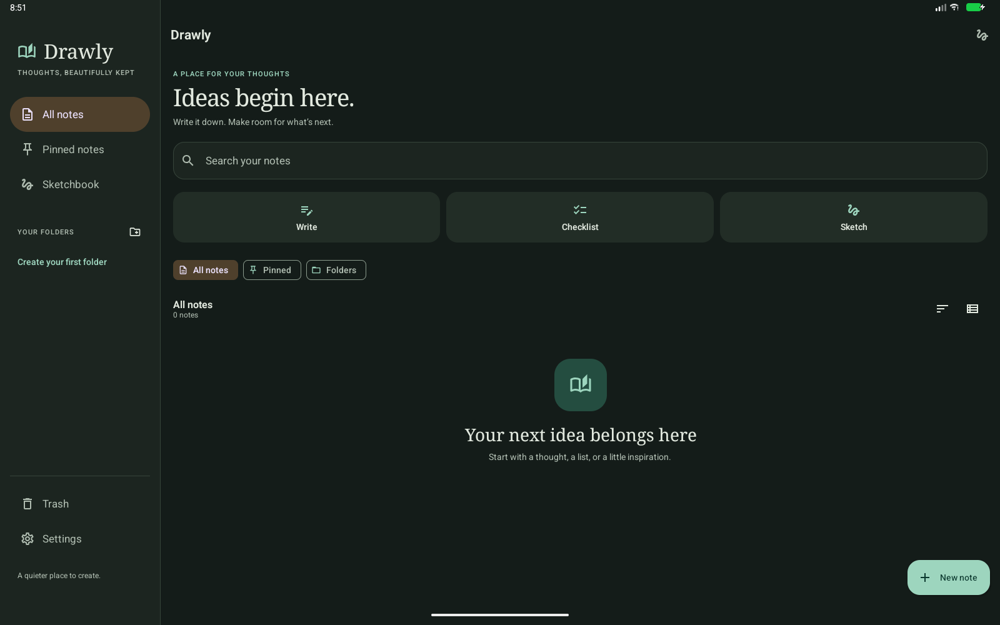

LOCAL ENGINEERING INVESTIGATION · 15 OCTOBER 2026
Follow-up: the user requested a closer Samsung Notes layout. The warm-paper UI described here has been superseded by the compact editor reconstruction, with current screenshots and explicit remaining differences.
The supplied Samsung Notes APK was inspected to understand its screen architecture, list rendering, resource structure, and contextual editing controls. Drawly implements these general interaction patterns in its existing Kotlin/Compose project with an original warm-paper and teal design.
com.samsung.android.app.notes; version 4.4.13.5 / 441305000; minimum SDK 23, target SDK 34. The package and version were decoded by aapt2.A5A2B8BA1F4E7E5E047480F5571ACD4DC5274AF91B166F6339082D1C3A88E5E7.C:\Users\vardh\rea, revision 75a4a14fa05d352762ffaefd3cd2e16515842b03; CLI reports version 6.4.0.inspect-android-package was attempted with the existing JADX JAR. It returned capability_unavailable because native/windows/build/manifest.json is absent. No successful REA Evidence record is claimed.jadx-headless-mcp-0.7.1-all.jar, through its public JADX Java API, and SDK 35 aapt2 2.19-11948202. JADX loaded 41,154 classes. Six relevant top-level classes were requested for decompilation.6E5EACF500B64292BFB73C49797C1958F6EE44646E43E868039AE7FEB573FF75.| Area | Observed evidence | Interpretation and Drawly implementation |
|---|---|---|
| Screen ownership | MemoListActivity references NotesFragment. NotesFragment owns a NotesPresenter and delegates search, selection, folder, sharing, and lock operations. | The library and editor have separate responsibilities. Drawly uses a library ViewModel, a per-note editor ViewModel, and explicit routes to folders, Trash, settings, and canvas. |
| Library layout | layout/noteslist_fragment maps to res/-wp.xml. Its decoded tree contains a LinearLayout, ViewStubs, SwipeRefreshLayout, and an include of noteslist_recyclerview (res/fDt.xml). | The reference uses Android Views and XML in the inspected path. Drawly uses lazy Compose cards, switching between an adaptive grid and a one-column list. |
| Card rendering | NotesAdapter attaches to NotesPenRecyclerView, obtains entry types in getItemViewType, creates holders through ViewHolderFactory, and uses StaggeredGridLayoutManager layout parameters. AdapterManager responds to LiveData changes. | Different row types and thumbnail loading are explicit responsibilities. Drawly cards show real note titles, previews, edit dates, pin and lock states; the UI derives from repository flows. |
| Composer | activity_composer_base maps to res/lAk.xml, whose root is BaseComposerActivityLayout. Resources include comp_hw_floating_menu, rich-text style/alignment menus, insertion rows, and page-list controls. | Text and handwriting have contextual tools. Drawly uses an editable paper surface, a formatting toolbar tied to the focused paragraph, insertion actions, and a separate persisted drawing workspace. |
| Adaptive chrome | Resource comp_hw_floating_menu_container_width declares 360dp by default and 700dp for sw600dp. The corresponding corner radius is 22dp and elevation 4dp. These are declarations, not measured runtime geometry. | The reference explicitly adapts tool chrome. Drawly uses a modal drawer on phones and a persistent sidebar at 840dp, adaptive card columns, a width-constrained editor, and existing portrait/landscape drawing docks. |
| Organization and modes | Named resources include noteslist_action_mode_layout, noteslist_nonote_layout, drawer entries, folder classes, and composer insert/page settings menus. | Selection, empty states, folders, and editing modes are first-class flows. Drawly provides selection pin/move/trash actions, empty/search states, folder creation/rename/colour, restore/permanent deletion, and note-level paper options. |
Drawly uses warm ivory #F6F5F0, paper #FFFEFA, teal #176B5B, restrained sage and sand surfaces, serif display headings, and sans-serif reading text. Cards use 22dp corners, generous internal spacing, and subtle borders. A complete dark palette and persistent system/light/dark preference are provided. Samsung logos, images, icons, fonts, and decompiled implementation code were not incorporated into Drawly.
The follow-up implementation adds a complete local ink workflow. See the handwriting implementation and verification report for tool behavior, screenshots, and remaining limits.
Samsung's proprietary document format and cloud service, image OCR, widgets, device-specific S Pen gestures, and multiwindow behavior are outside this implementation. Existing PDF attachment blocks still open in a viewer; new PDF imports create editable ink pages. Rich text is paragraph based. The note lock is an access gate, not file encryption. Collaboration metadata support is implemented in both app and worker source; the worker needs deployment, and live cross-device verification remains outstanding. No claim of full Samsung feature parity is made.
JADX emitted warnings while reconstructing some dependency methods. Decompiled Java is an approximation of the binary, not original source. Static resource names establish the presence of controls, not their complete runtime behavior.
Debug APK built; 30 tests passed (12 JVM and 18 Android); lint completed with 0 errors and 72 warnings. Coverage includes rich text, persistence, autosave, locked-note loading, rendered pressure widths, distinct pen styles, exact sparse-segment erasing, page history, selection transforms, favourites, document export, imported PDF background pixels, and injected stylus pressure with simultaneous palm contact. Two existing example tests are included in the count. The collaboration worker passes TypeScript checking.
Manual emulator review covered a 1080×2400 phone, light/dark themes, a 1600×1000 tablet configuration with persistent navigation, drawing creation and preview generation, and an app force-stop/relaunch followed by reopening the saved text and drawing. Tests used a temporary Android 17 emulator; physical-device stylus behavior, authentication success on enrolled hardware, media-device variations, and live collaboration remain unverified.
These captures show the implemented app. “Field notes” is temporary review data created in the emulator, not content seeded into the app.

powershell -File tools/reverse-engineering/InspectSamsung.ps1 # Android verification, with an emulator running: .\gradlew.bat :app:assembleDebug :app:testDebugUnitTest :app:connectedDebugAndroidTest :app:lintDebug
Raw class reconstructions, resource dump, layout trees, and tool diagnostics are retained locally in samsung_app/analysis (ignored by Git). The APK is also ignored. Inspection script · JADX inspector · App navigation.
Android 17 test compatibility: Espresso was pinned to 3.7.0 after the old test dependency failed on InputManager reflection. The fix is documented in the upstream AndroidX issue.